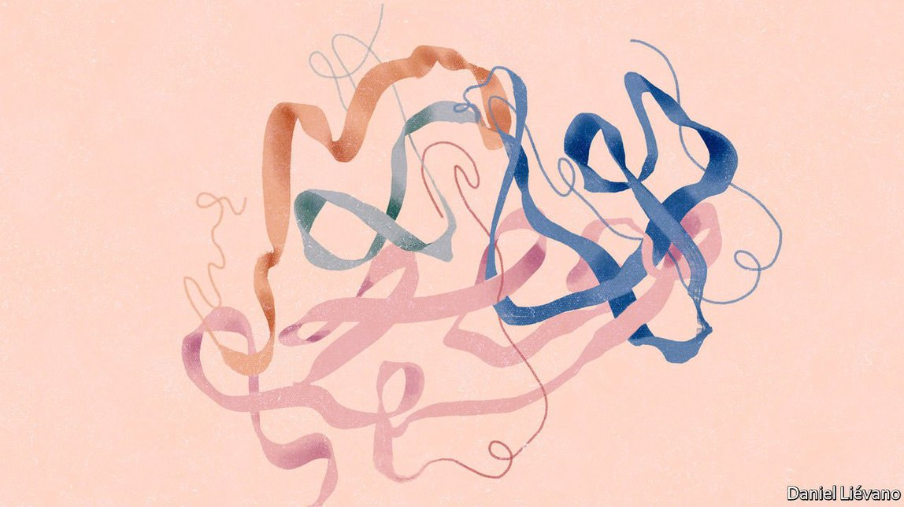

2021-08-17T14:45:45+00:00
【首文】蛋白质宇宙
破解蛋白质折叠谜题取得显著进展
这将有助于开辟近乎无限的前景
当福音传道者圣约翰写下“道成肉身”（The Word became flesh）时，他借鉴了源自古典希腊哲学的理性和秩序的观念。但他也言简意赅地描述了分子生物学中最基本的真理。在一种叫作核糖体的奇妙而古老的机制中，“道”——也就是储存在DNA中的信息——以蛋白质的形式转化成为肉身。
蛋白质是肉身的说法可以从字面去理解，因为蛋白质让肉有了食肉动物嗜好的口感和血腥味。它也是一种比喻，因为肉体及精神的力量和软弱全都离不开蛋白质的作用。对蛋白质的操控和大规模生产构成了现代药理学的基础。他汀类药物市场广阔，全靠它们与一种名叫HMG-CoA还原酶的蛋白质的相互作用；世界上最畅销的抗癌药物可瑞达（Keytruda）本身就是一种蛋白质，是一种经过精妙调整的抗体，能够关闭致使癌症逃避免疫系统的机制。了解蛋白质的形式和功能对医学和农业至关重要，对于替代目前仍从石油中提取的石化产品也很关键。这种理解正在迅速加深。
蛋白质是由被称为氨基酸的更小的分子组成的链条。核糖体可以用20种氨基酸中的一种来填充链条中的每一环。存储在DNA中的信息指示这20种氨基酸中的哪一种去哪个位置。
为了呈现出所需的形状，蛋白质必须将自身折叠成特定的样式，这个过程会产生各种各样的扭结、曲折、螺旋、片状和空腔。形状取决于氨基酸的序列，但成百上千个氨基酸之间的相互作用太复杂，单看序列无法揭示太多。为了详细了解一种蛋白质的结构，科学家不得不以较多的数量制造它，引导这些分子形成晶体（或者像近期的尝试那样将它们速冻），并用X光（如果用的是冷冻法，就用电子）“轰击”样本。这些工序需要付出时间、金钱和努力。只有一小部分序列已知的蛋白质是用这种方式被研究的。
现在，事情看起来会变得容易许多。英国的AI公司DeepMind开发了一款非常精巧的软件AlphaFold，它从对序列和结构的详细研究中学习，只根据蛋白质弯弯曲曲的“骨架”上的氨基酸序列就可以预测蛋白质的形状。7月22日，这家和谷歌一样隶属于Alphabet的公司将自己的35万个预测免费向所有人开放，此前一周还发布了编码。预计很快还会出现数百万个这样的预测。
一些怀疑存在炒作的人不无道理地指出，这些预测并不会全都一样好，而且就算有了更好的预测，也还是需要寻找其他探索蛋白质结构的方法。在运用AI研究这一问题时，AlphaFold不会是空前绝后的一个。尽管如此，这款软件看起来可能会大展拳脚，帮助研究人员更快地发现可能的出路和死胡同，让他们着手研究原本可能会回避的项目。如果AlphaFold不能在提供大量的基础生物学知识之外很快提供有用的药理研究成果，原因也绝不会是使用不足。
AlphaFold还将有助于迎来一个充满怪奇事物的时代。蛋白质通常由20种不同的氨基酸组成，原则上每种氨基酸都有可能位于链条上的任何一点。在第一个氨基酸后面有20种氨基酸供选择，所以一个双氨基酸链有20乘20也就是400种可能的组合，三氨基酸链有20乘20乘20也就是8000种组合，以此类推。等数到由八个氨基酸组成的链，可能的组合形式就比地球上的人口还要多了。人类蛋白质通常有400个氨基酸那么长，许多甚至有几千个。在可观测的宇宙中，没有任何一种有形事物在数量上能勉强与含有400个氨基酸的蛋白质包含的可能性一比。
因此，这些计算揭示出的“潜在的蛋白质空间”本身就是一个宇宙，有序但近乎无限。迄今为止，进化已经探索了其中一部分，里面包含各种各样的奇观——有的蛋白质能像弹簧一样伸缩，像轮子一样旋转，像活塞一样伸展，像棘轮一样转动，有的能将阳光转化为化学能，还有的能构建、破坏和回收生命的所有组成部分，等等。但这只不过是蛋白质宇宙中最微小的一个角落。一些科学家已经远远走出了自然的舒适区，开始研究“从头”（de novo）蛋白质，开拓制造微小的机械装置和机器的方法。随着像AlphaFold这样的工具提升了分子设计的便利度，还会有更多科学家加入进来。
跟进化历经数十亿年的打磨而设计出来的产物相比，这些东西只会是最粗糙的玩具，至少在起步时是这样。但是，蛋白质设计师们的“道”最终会转化成什么样的新肉身，谁又能说得准呢？
2021-08-17T14:45:45+00:00
Proteinotopia
Remarkable progress has been made in understanding the folding of proteins
It will help open up almost limitless vistas
WHEN ST JOHN THE EVANGELIST wrote of the Word becoming Flesh, he was drawing on ideas of reason and order derived from classical Greek philosophy. But he was also providing a succinct description of the most basic truth in molecular biology. In a wonderful and ancient mechanism called the ribosome, words—in the form of messages stored in DNA—are translated into flesh, in the form of proteins.
Proteins are flesh both literally, in that they give meat the texture and bloodiness that carnivores savour, and figuratively, in that their actions lie behind all the strengths and frailties of body and mind. Both their manipulation and their mass production are fundamental to modern pharmacology. The huge market for statins rests on the way they interact with the workings of a protein called HMG-CoA reductase; Keytruda, the world’s biggest-selling cancer drug, is a protein itself, a subtly tweaked antibody which turns off a mechanism that lets cancers evade the immune system. Understanding the form and function of proteins is crucial to medicine, to agriculture and to replacing the petrochemicals currently produced from oil. And that understanding is fast deepening.
Proteins are created as chains of smaller molecules called amino acids. The ribosome can fill each link in the chain with one of 20 different varieties of them. The words stored in DNA set out which of those 20 types of amino acid goes where.
In order to take on the shape required of it, a protein must fold itself up into a specific form, a process which produces all manner of kinks, twists, swirls, sheets and cavities. The shape depends on the amino-acid sequence, but the interactions between the hundreds of amino acids are just too complex for the sequence alone to reveal much. To understand the structure of a protein in detail, scientists have had to make comparatively large amounts of it, coax those molecules into forming a crystal (or, more recently, flash-freeze them) and bombard the sample with X-rays (or, if it is a frozen one, electrons). These procedures take time, money and effort. Only a tiny fraction of the proteins whose sequences are known have been studied this way.
Now things look likely to get considerably easier. AlphaFold, a very elegant piece of software developed by DeepMind, a British AI company, has learned from the detailed study of sequence and structure to make predictions of protein shapes using just the amino-acid sequences of their very bendy backbones. On July 22nd DeepMind, which, like Google, is owned by Alphabet, made 350,000 of its predictions freely available to all, having released the code the week before. Millions more such predictions are expected soon.
As those suspicious of hype rightly point out, not all of these will be equally good and better prediction does not do away with the need for other ways of exploring protein structure. AlphaFold will not be the last word in the application of AI to the problem. All that said, the software looks likely to be massively useful, helping researchers spot possibilities and dead ends more quickly and letting them take on projects they would otherwise have steered clear of. If AlphaFold is not soon providing useful pharmacological results, as well as lots of basic biology, it will not be for want of application.
AlphaFold will also help usher in an era of altogether stranger things. Proteins are typically made from 20 different amino acids, each of which can, in principle, sit at any point in the chain. With 20 choices as to what should follow the first amino acid, you have 20x20=400 possible amino-acid doublets, 20x20x20=8,000 triplets and so on. By the time you get to an eight-amino-acid chain, there are more possibilities than there are people on Earth. Human proteins are typically 400 amino acids long; many have lengths in the thousands. There is no type of physical thing in the observable universe remotely as numerous as the possibilities inherent in a 400-amino-acid protein.
The “potential protein space” such calculations reveal is thus a cosmos unto itself, ordered yet near infinite. The bit that evolution has explored so far—which contains wonders as diverse as proteins that flex like springs, spin like wheels, extend like pistons and crank like ratchets, that turn sunlight into chemical energy, that build, demolish and recycle all the components of life and do more besides—is but the tiniest corner of it. Already some scientists are working on “de novo” proteins well outside nature’s comfort zone as ways of making tiny mechanisms and machines. As tools like AlphaFold increase the ease of molecular design, they will be joined by many more.
Compared with the designs evolution has honed over billions of years such things as this will be the crudest of toys, at least to begin with. But who can say what new flesh the designers’ words will eventually bring into being? ■
2021-08-17T14:45:45+00:00
【首文】蛋白質宇宙
破解蛋白質摺疊謎題取得顯著進展
這將有助於開闢近乎無限的前景
當福音傳道者聖約翰寫下“道成肉身”（The Word became flesh）時，他借鑒了源自古典希臘哲學的理性和秩序的觀念。但他也言簡意賅地描述了分子生物學中最基本的真理。在一種叫作核糖體的奇妙而古老的機制中，“道”——也就是儲存在DNA中的信息——以蛋白質的形式轉化成為肉身。
蛋白質是肉身的說法可以從字面去理解，因為蛋白質讓肉有了食肉動物嗜好的口感和血腥味。它也是一種比喻，因為肉體及精神的力量和軟弱全都離不開蛋白質的作用。對蛋白質的操控和大規模生產構成了現代藥理學的基礎。他汀類藥物市場廣闊，全靠它們與一種名叫HMG-CoA還原酶的蛋白質的相互作用；世界上最暢銷的抗癌藥物可瑞達（Keytruda）本身就是一種蛋白質，是一種經過精妙調整的抗體，能夠關閉致使癌症逃避免疫系統的機制。了解蛋白質的形式和功能對醫學和農業至關重要，對於替代目前仍從石油中提取的石化產品也很關鍵。這種理解正在迅速加深。
蛋白質是由被稱為氨基酸的更小的分子組成的鏈條。核糖體可以用20種氨基酸中的一種來填充鏈條中的每一環。存儲在DNA中的信息指示這20種氨基酸中的哪一種去哪個位置。
為了呈現出所需的形狀，蛋白質必須將自身摺疊成特定的樣式，這個過程會產生各種各樣的扭結、曲折、螺旋、片狀和空腔。形狀取決於氨基酸的序列，但成百上千個氨基酸之間的相互作用太複雜，單看序列無法揭示太多。為了詳細了解一種蛋白質的結構，科學家不得不以較多的數量製造它，引導這些分子形成晶體（或者像近期的嘗試那樣將它們速凍），並用X光（如果用的是冷凍法，就用電子）“轟擊”樣本。這些工序需要付出時間、金錢和努力。只有一小部分序列已知的蛋白質是用這種方式被研究的。
現在，事情看起來會變得容易許多。英國的AI公司DeepMind開發了一款非常精巧的軟件AlphaFold，它從對序列和結構的詳細研究中學習，只根據蛋白質彎彎曲曲的“骨架”上的氨基酸序列就可以預測蛋白質的形狀。7月22日，這家和谷歌一樣隸屬於Alphabet的公司將自己的35萬個預測免費向所有人開放，此前一周還發布了編碼。預計很快還會出現數百萬個這樣的預測。
一些懷疑存在炒作的人不無道理地指出，這些預測並不會全都一樣好，而且就算有了更好的預測，也還是需要尋找其他探索蛋白質結構的方法。在運用AI研究這一問題時，AlphaFold不會是空前絕後的一個。儘管如此，這款軟件看起來可能會大展拳腳，幫助研究人員更快地發現可能的出路和死胡同，讓他們着手研究原本可能會迴避的項目。如果AlphaFold不能在提供大量的基礎生物學知識之外很快提供有用的藥理研究成果，原因也絕不會是使用不足。
AlphaFold還將有助於迎來一個充滿怪奇事物的時代。蛋白質通常由20種不同的氨基酸組成，原則上每種氨基酸都有可能位於鏈條上的任何一點。在第一個氨基酸後面有20種氨基酸供選擇，所以一個雙氨基酸鏈有20乘20也就是400種可能的組合，三氨基酸鏈有20乘20乘20也就是8000種組合，以此類推。等數到由八個氨基酸組成的鏈，可能的組合形式就比地球上的人口還要多了。人類蛋白質通常有400個氨基酸那麼長，許多甚至有幾千個。在可觀測的宇宙中，沒有任何一種有形事物在數量上能勉強與含有400個氨基酸的蛋白質包含的可能性一比。
因此，這些計算揭示出的“潛在的蛋白質空間”本身就是一個宇宙，有序但近乎無限。迄今為止，進化已經探索了其中一部分，裡面包含各種各樣的奇觀——有的蛋白質能像彈簧一樣伸縮，像輪子一樣旋轉，像活塞一樣伸展，像棘輪一樣轉動，有的能將陽光轉化為化學能，還有的能構建、破壞和回收生命的所有組成部分，等等。但這只不過是蛋白質宇宙中最微小的一個角落。一些科學家已經遠遠走出了自然的舒適區，開始研究“從頭”（de novo）蛋白質，開拓製造微小的機械裝置和機器的方法。隨着像AlphaFold這樣的工具提升了分子設計的便利度，還會有更多科學家加入進來。
跟進化歷經數十億年的打磨而設計出來的產物相比，這些東西只會是最粗糙的玩具，至少在起步時是這樣。但是，蛋白質設計師們的“道”最終會轉化成什麼樣的新肉身，誰又能說得准呢？